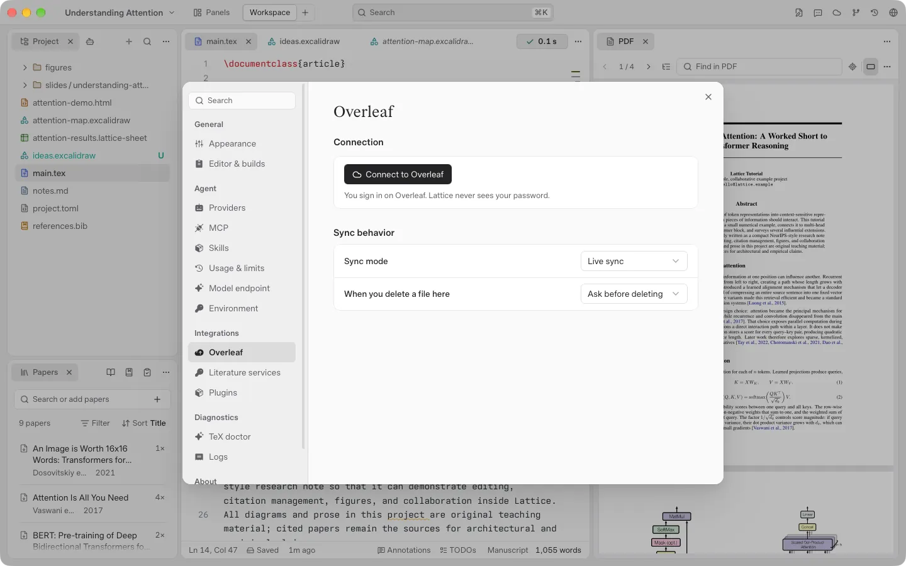

Overleaf sync
Lattice syncs with Overleaf both ways. Your co-authors keep working on Overleaf and don't need Lattice; their edits, comments, chat and tracked changes show up in Lattice as they happen.
Connect
Open Settings › Overleaf and choose Connect to Overleaf. You sign in on Overleaf's own page; Lattice never sees your password.

Open an Overleaf project
- Choose Open from Overleaf in the project menu or the File menu, or click the cloud button in the title bar.
- Search your projects, or paste a project's link. Projects shared with you as invitations are listed too; accept the invitation on Overleaf first.
- Choose Download to for where the local copy goes, then open the project.
Lattice downloads it into an ordinary folder and keeps that folder linked. If you already have a local copy, Link this folder connects it instead of downloading again.
Put a local project on Overleaf
With the project open, open the same Overleaf panel and choose Upload this project to Overleaf, give it a name, then Upload and connect.
How sync behaves
Set in Settings › Overleaf:
- Sync mode: Live sync sends and receives edits as you type. Manual syncs only when you choose Sync now.
- When you delete a file here: Ask before deleting (the default), Delete on Overleaf too, or Keep it on Overleaf.
When the same file changed on both sides while you were offline, Lattice merges what it can. If it can't, Overleaf's version goes into the project and yours is saved beside it as a "(local conflict …)" file, so nothing is lost.
Comments and suggestions from Overleaf appear in the margin of the source and in the Overleaf panel (Comments, Suggestions and Chat). View › Margin Review chooses how much the margin shows.